CryptoNinjaのキャラクターたちと遊べるミニゲーム集です。カードを押すとゲームが始まります(スマホ対応)。
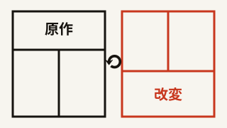
制作ツール
漫画リミックス室
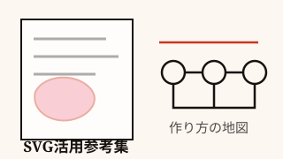
読みもの
SVG活用参考集
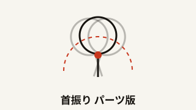
制作ツール
首振り パーツ版
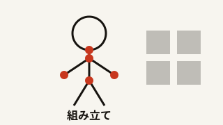
制作ツール
組み立てスタジオ
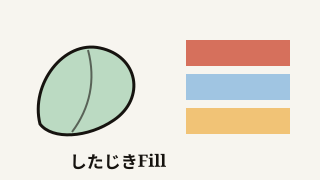
制作ツール
したじきFill
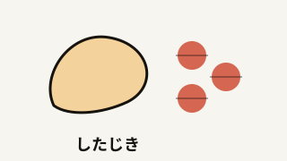
制作ツール
したじき
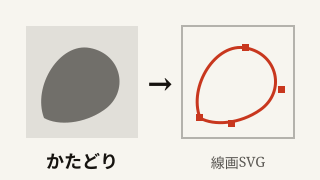
制作ツール
かたどり
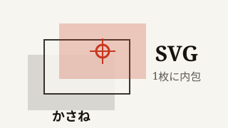
制作ツール
かさね
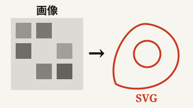
制作ツール
ベクトル工房
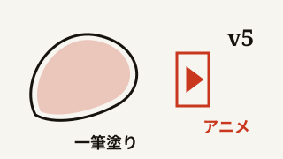
制作ツール
一筆塗り工房 v5
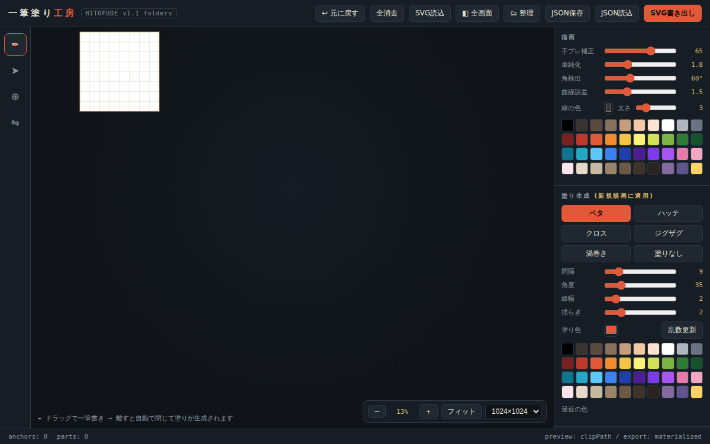
制作ツール
一筆塗り工房(フォルダ管理版)
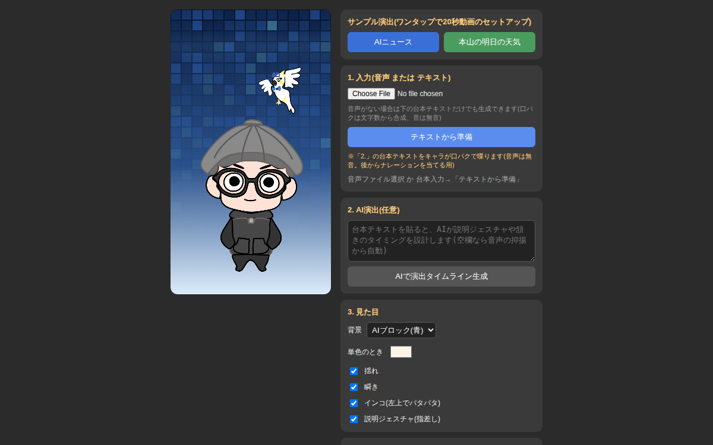
制作ツール
hitofude ショート動画メーカー
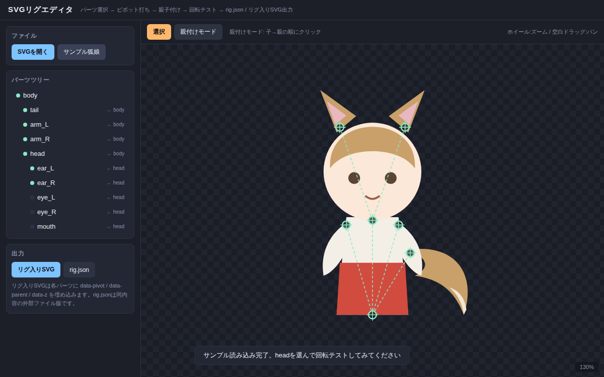
制作ツール
SVGリグエディタ
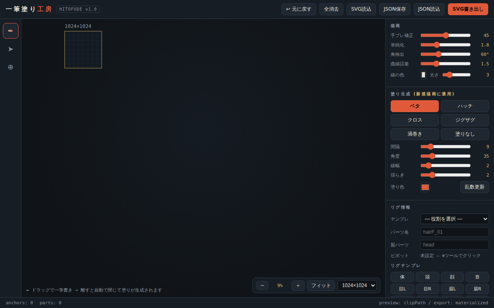
制作ツール
一筆塗り工房 3
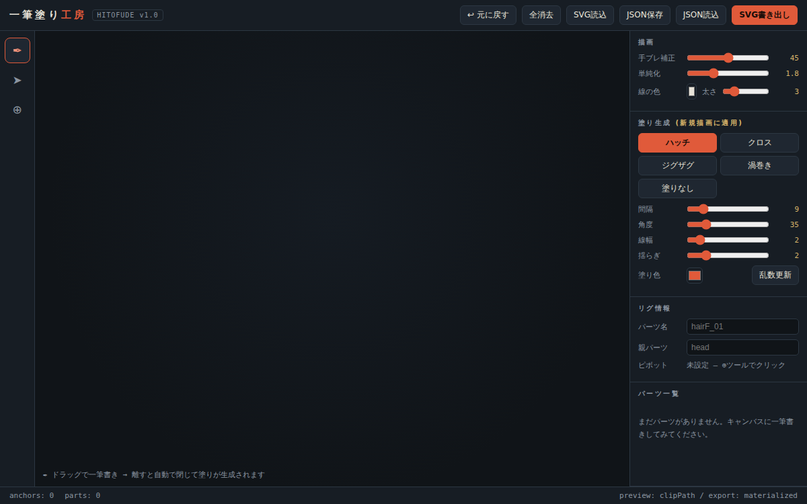
制作ツール
一筆塗り工房
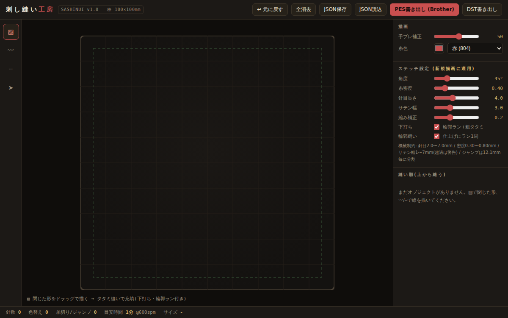
制作ツール
刺し縫い工房
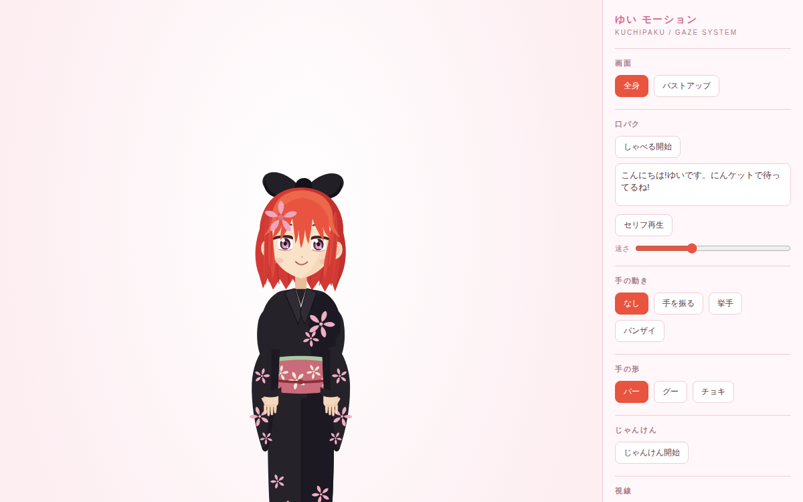
制作ツール
ゆい 口パク・視線システム
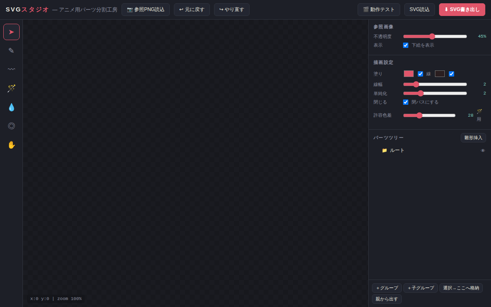
制作ツール
SVGスタジオ
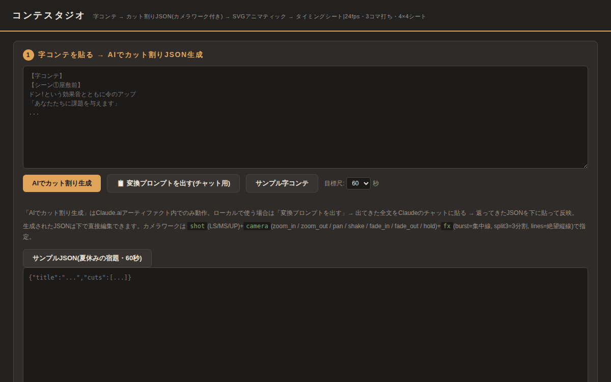
制作ツール
コンテスタジオ
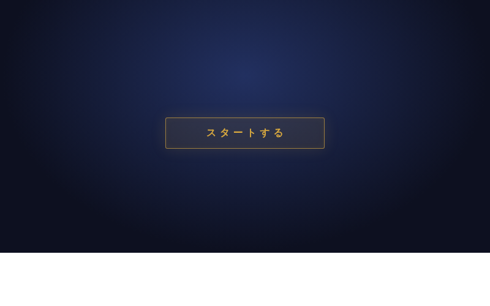
シミュレーションRPG
空の狐と地上のウサギ SRPG
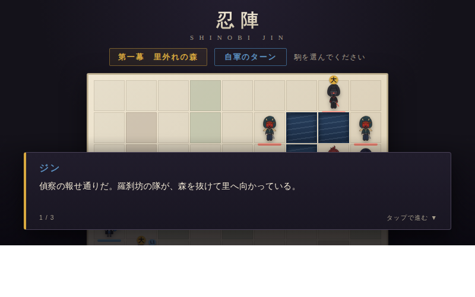
戦略
忍陣 — シノビジン
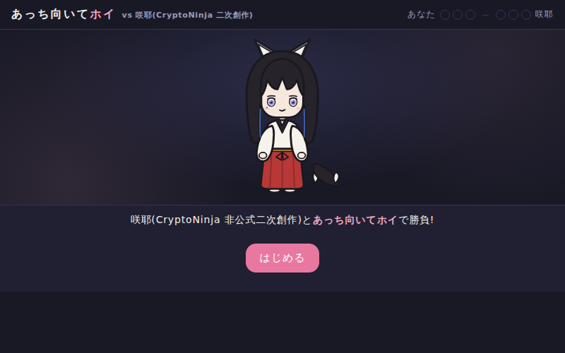
じゃんけん+勝負勘
あっち向いてホイ vs 咲耶
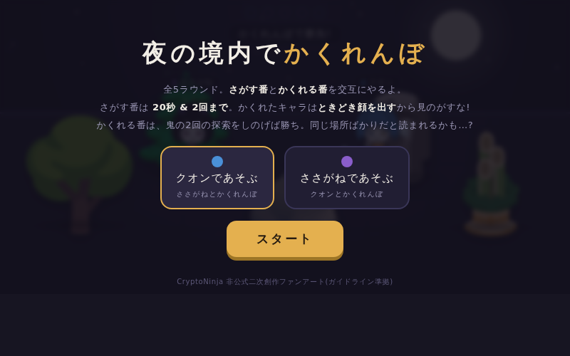
かくれんぼ
夜の境内でかくれんぼ — ささがね vs クオン
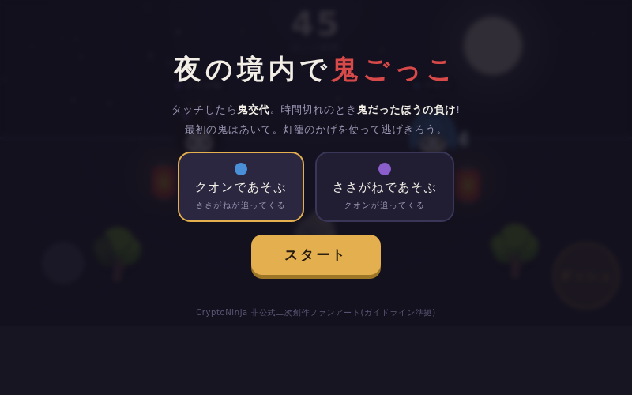
鬼ごっこ
夜の境内で鬼ごっこ — ささがね vs クオン
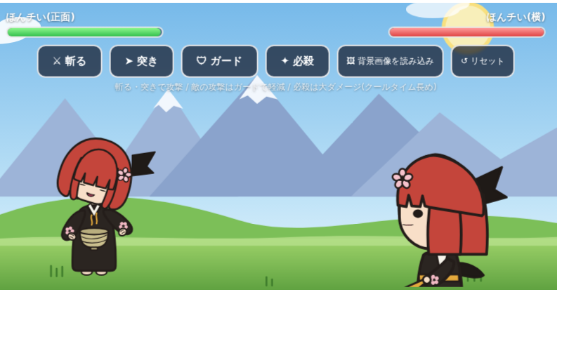
バトルデモ
戦闘シーン
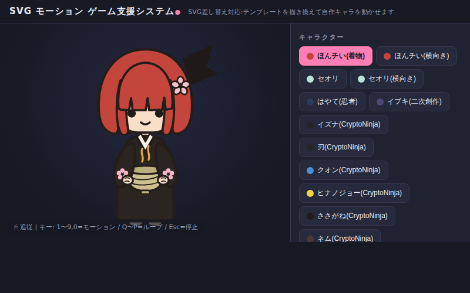
制作ツール
SVGモーション ゲーム支援システム
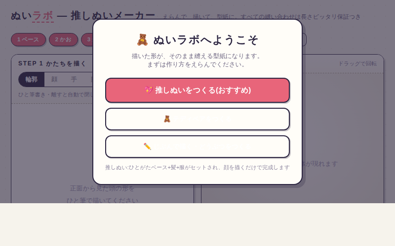
工作ツール
ぬいラボ — ぬいぐるみ型紙メーカー
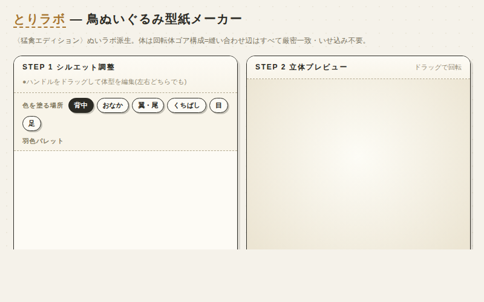
工作ツール
とりラボ — 鳥ぬいぐるみ型紙メーカー〈猛禽エディション〉